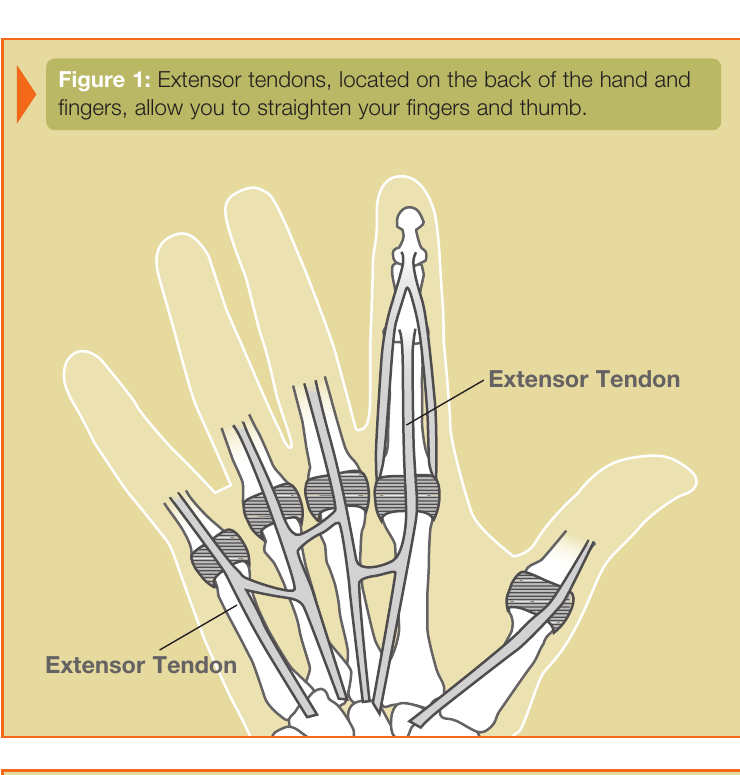
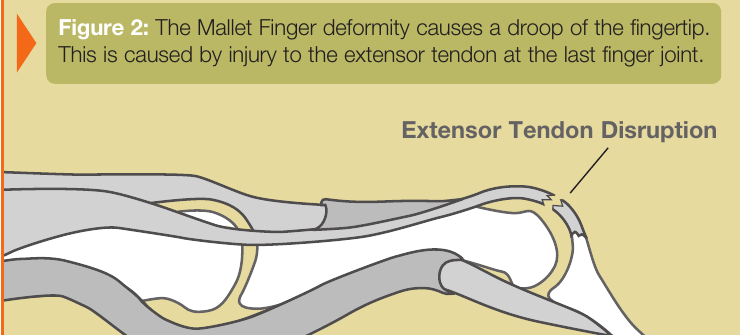
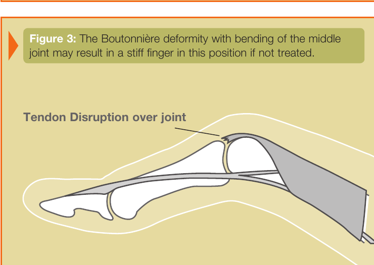

Kondisyon
Blesi Tandon Ekstansè
Koup, chire, oswa kase nan tandon yo ki sou dèyè men ak dwèt ou e ki lonje jwenti yo.

Illustration © American Society for Surgery of the Hand
Kisa yon blesi tandon ekstansè ye?
Tandon ekstansè yo se kòd ki sou dèyè men, dwèt, ak pous ou. Yo jis anba po a, dirèkteman sou zo yo. Lè w ouvè men w epi lonje dwèt ou yo, se tandon sa yo k ap fè travay la. Paske yo tèlman pre sifas la, yo ka blese ak yon ti koup, yon chòk nan pwent dwèt la, oswa yon kou sou dèyè men an. Lè yon tandon ekstansè koupe oswa chire, jwenti ki afekte a p ap ka lonje nòmalman.
Sentòm komen
- Pa ka lonje yon oswa plizyè jwenti dwèt nèt
- Yon pwent dwèt ki tonbe (dwèt mato) oswa yon jwenti nan mitan ki pliye e ki pa ka lonje (defòmite boutonyè)
- Doulè, anflamasyon, oswa blese sou dèyè dwèt la oswa men an
- Yon koup, pikòt, oswa laserasyon sou dèyè men an oswa dwèt la
- Feblès lè w ap eseye ouvè men an
Poukisa sa rive?
Gen twa fason komen tandon ekstansè yo blese:
- Yon koup sou dèyè men an oswa dwèt la ak yon kouto, vè, oswa yon bò file. Menm yon koup ki sanble piti ka koupe tandon ki anba a.
- Yon chòk nan pwent dwèt la (yon boul frape pwent dwèt la, oswa dwèt la kwoke nan yon dra oswa mayo). Sa ka rache tandon an sot nan zo a.
- Yon kou sou jwenti nan mitan dwèt la. Sa ka chire bann santral la epi lakòz yon defòmite boutonyè.

Illustration © American Society for Surgery of the Hand

Illustration © American Society for Surgery of the Hand
Opsyon tretman
Tretman san operasyon
- Atèl. Anpil blesi tandon ekstansè ki fèmen geri byen nan yon atèl ki kenbe jwenti a dwat. Dwèt mato ak kèk blesi boutonyè trete konsa. Atèl la jeneralman pote san rete pandan 6 a 8 semèn, epi apre sa a tan pasyèl pou kèk lòt semèn.
- Terapi men. Yon terapis men sètifye ap fè atèl la sou mezi w epi montre w kijan pou pran swen dwèt la pandan l ap geri.
Tretman chirijikal
- Reparasyon tandon. Si tandon an koupe, jeneralman yo bezwen koud li ansanm ankò. Se yon operasyon anbilatwa, souvan fèt ak anestezi lokal oswa rejyonal.
- Pen atravè jwenti a. Kèk blesi trete ak yon ti pen mete nan zo a tankou yon atèl andedan pandan tandon an ap geri.
- Rekonstriksyon apre sa. Si yon blesi te rate oswa geri mal, yon dezyèm operasyon ka nesesè pou remete pozisyon ak mouvman dwèt la.
Apre operasyon oswa atèl, terapi men prèske toujou fè pati rekiperasyon an. Li ede tandon an glise ankò epi li anpeche rèdite.
Sa pou w tann nan vizit ou
Dr. Barrera ap egzamine men w, teste ekstansyon aktif chak jwenti, epi revize nenpòt imaj si w genyen. Souvan yo pran radyografi pou chèche yon ti moso zo ki ka soti ansanm ak tandon an. Selon ki tandon ki afekte, si po a koupe, ak konbyen tan depi blesi a, n ap diskite ansanm sou atèl kont operasyon.
Rele nou si ou gen yon koup ki fon sou dèyè men w oswa dwèt ou, si ou pa ka lonje yon jwenti dwèt apre yon blesi, si po a bò yon blese wouj oswa ap koule, oswa si ou gen lafyèv ansanm ak blesi a.
Gade tou
Kesyon?
Rele kote biwo ou a pou kesyon ki pa ijan:
- NYU Langone Laurelton · 646-501-4950
- NYU Orthopedic, Woodside · 929-429-3222
- NYU Orthopedic, Richmond Hill · 718-206-6923
- Jamaica Hospital Ambulatory Care Center (ACC) · 718-301-0720
Gade enfòmasyon kontak biwo nou yo pou adrès ak nimewo faks.